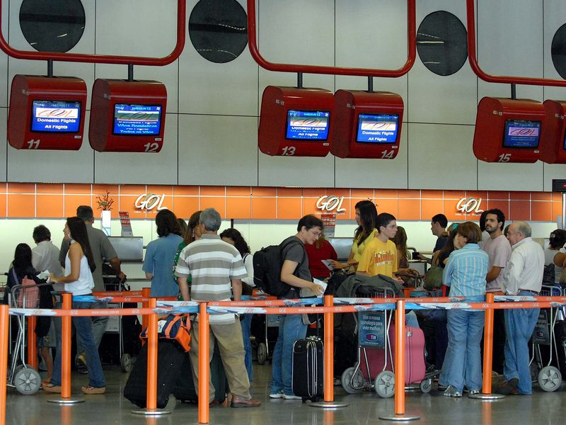
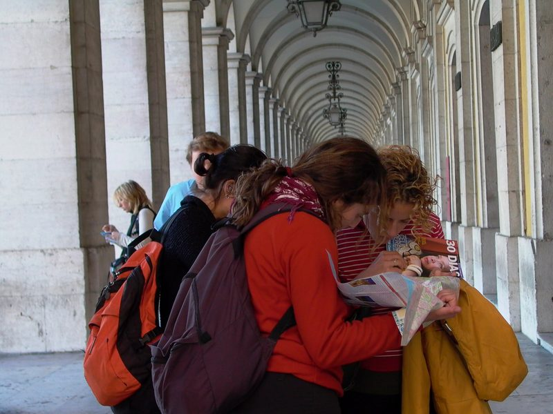
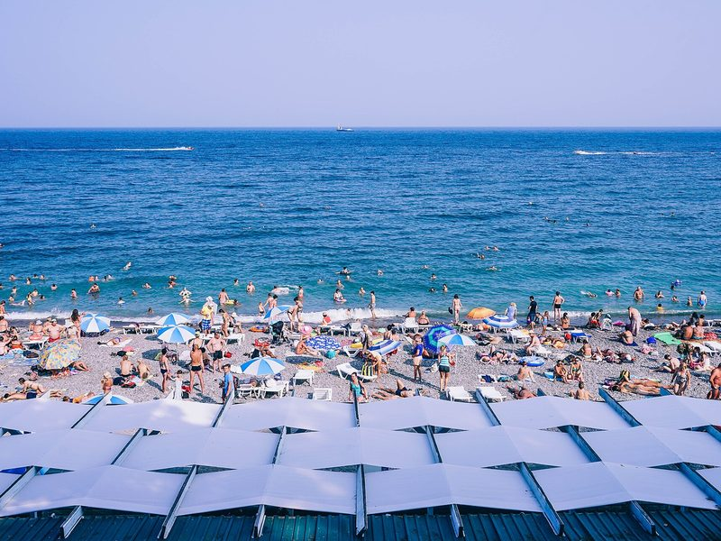
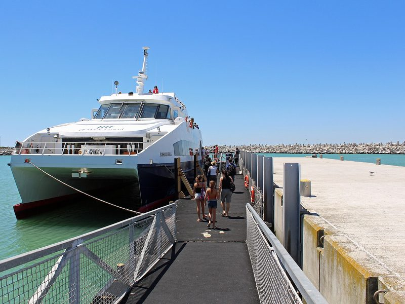
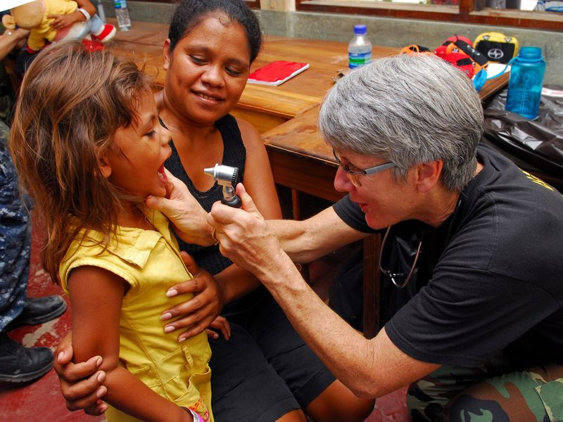
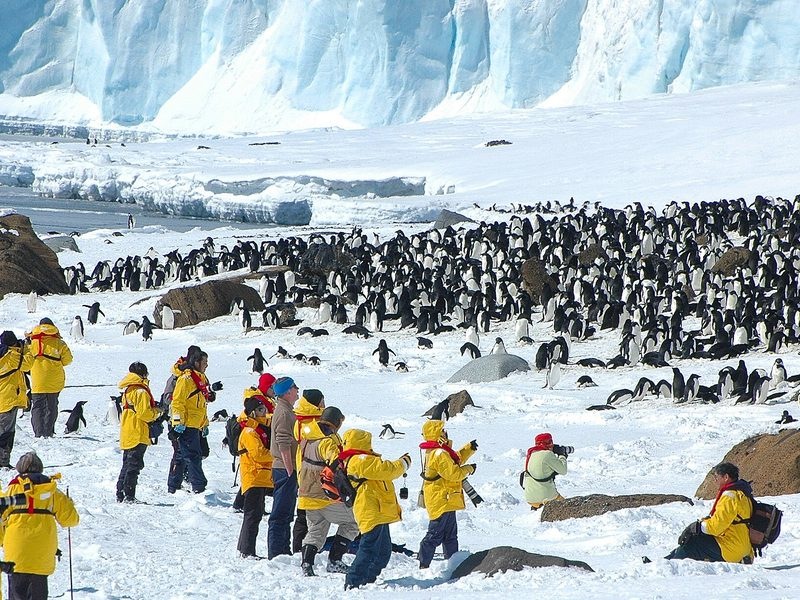

Aims of the lesson & Lead-in
Aims of the lesson
After the lesson, you will be able to:
- Name 50+ words and chunks for holidays, journeys, travel documents and responsible tourism.
- Explain the difference between must, have to, don't have to, needn't and mustn't.
- Recognise the prefixes and suffixes that change a word's meaning or part of speech.
- Compare two holiday photos and say who would enjoy each trip.
- Use the right modal verb for travel rules, permission and practical advice.
- Find main ideas, details and paraphrases in VSTEP reading and listening.
- Give and defend an opinion on travel and tourism with the 7-step frame.
- Write an informal email (≥ 120 words) and an opinion essay (≥ 250 words).
- Value travel that protects fragile places and the people who live there.
Lead-in 1 · Ways to travel — compare and react

- Question 1"What are these passengers doing, and how do you think they feel?"
- Question 2"What do you have to do before you can board a plane?"
- Question 3"Do you prefer to check in online or at the airport? Why?"

- Question 1"Who are these people, and what are they looking for?"
- Question 2"What are the advantages and disadvantages of backpacking?"
- Question 3"Have you ever travelled with just a rucksack? Where did you go?"

- Question 1"Describe the beach. Would you enjoy a day there?"
- Question 2"Who would enjoy this kind of holiday, and who wouldn't?"
- Question 3"Which beach in Vietnam would you recommend to a foreign visitor?"

- Question 1"Where do you think these passengers are going?"
- Question 2"Is a ferry a better way to travel than a plane? Why? / Why not?"
- Question 3"Do you get travel sickness on boats or buses? What helps?"

- Question 1"What is the doctor doing, and where might this be?"
- Question 2"Why do some doctors spend their holidays working in remote areas?"
- Question 3"Would you join a mobile clinic in a mountain province? Why? / Why not?"

- Question 1"What are the tourists doing, and what rules do you think they have to follow?"
- Question 2"Should tourists be allowed to visit places like this?"
- Question 3"Would you go to Antarctica if you had the chance?"
Lead-in 2 · Agree or disagree?
1 · Tourists should not be allowed to visit unspoilt places like Antarctica.
Model answer
I partly disagree. People who have seen Antarctica with their own eyes often come home and support the groups that protect it, and some tour ships even carry scientists. But the groups have to be small, and every visitor must follow strict rules.
2 · A holiday in your own country is just as good as a holiday abroad.
Model answer
I agree, at least for a short break. Last year my family spent four days in Da Lat and came back more relaxed than after our trip to Bangkok. No visa, no jet lag, no long queues at passport control.
3 · Package holidays are boring. Travelling on your own is the only real way to see a country.
Model answer
I don't agree at all. My parents love package holidays because someone else books the hotel and plans the trips, so they can just relax. Travelling on your own is exciting, but it isn't the only way to see a place.
4 · Every hospital should send its doctors to at least one conference abroad a year.
Model answer
I agree in principle. After a congress in Singapore, our team changed the way we hand over patients at night. The trouble is that most hospitals simply can't afford it, so one trip every two or three years is more realistic.
5 · Security rules at airports are far too strict.
Model answer
I disagree. The security check is annoying when you're in a hurry, and I once had to throw away a full bottle of fish sauce. Still, I'd rather queue for twenty minutes than worry about safety on the plane.
6 · Travel insurance should be compulsory for everyone who goes abroad.
Model answer
I completely agree. A friend of mine broke her leg skiing in Japan, and the hospital bill came to over ten thousand dollars. Her insurance paid for everything, even the flight home.
- I completely agree / I partly agree / I don't agree at all, because …
- It depends on …
- In my experience, …
- That's true, but …
Lead-in 3 · How many words do you have for each of the 4 groups?
Which kinds of holiday, transport and accommodation can you name in English?
Which verbs go with a flight, a hotel or a plane? Which phrasal verbs do you need at an airport?
What do you need before you travel abroad, and what are you not allowed to do at an airport?
Which words describe a wild, unspoilt place, and what tourists can do to it?